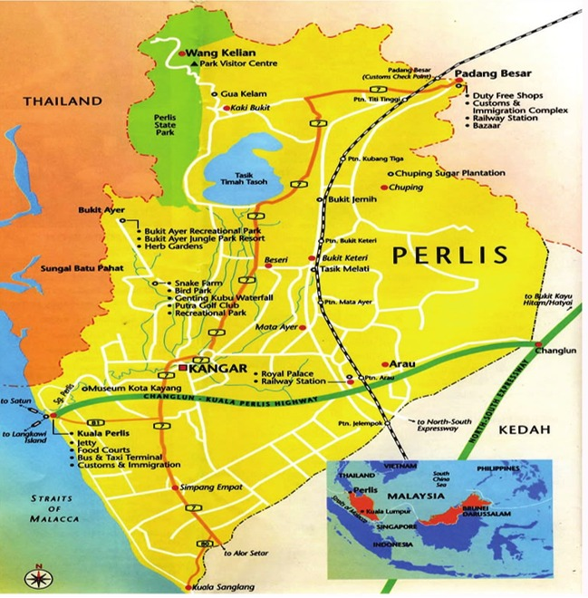
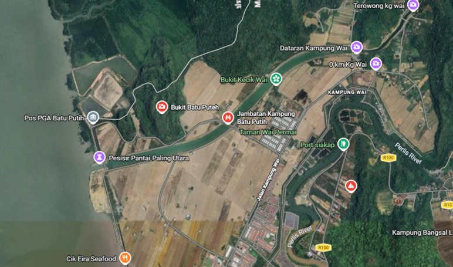
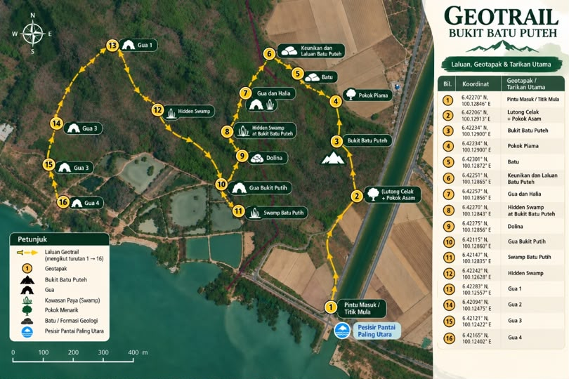

Discover the Hidden Geological Wonders of Bukit Batu Puteh
Bukit Batu Puteh is a natural area located in Kuala Perlis, Perlis. The area is rich in natural resources and features a variety of flora and fauna. It also has unique geological and biological features that make it an interesting site for nature and geotourism activities. The combination of its geological formations, biodiversity, flora, and fauna makes Bukit Batu Puteh a valuable natural area for exploration, education, research, and tourism.
Here are some important details that visitors should know before exploring Bukit Batu Puteh.
Nature trail with limestone and rural surroundings.
Morning or late afternoon for cooler weather and better scenery.
Comfortable shoes, drinking water, hat and basic outdoor equipment.
Visitors are encouraged to keep the area clean and protect the natural environment.
Discover the location, surroundings and geotrail route of Bukit Batu Puteh through these maps.

This map shows the location of Perlis and its main towns, roads, and attractions, providing an overview of the study area.

This map shows the location of Bukit Batu Puteh in Kuala Perlis, situated near the coastal area and the Malaysia–Thailand border.

This geotrail map shows the designated route and 16 main geosites at Bukit Batu Puteh, guiding visitors through its geological and natural attractions.